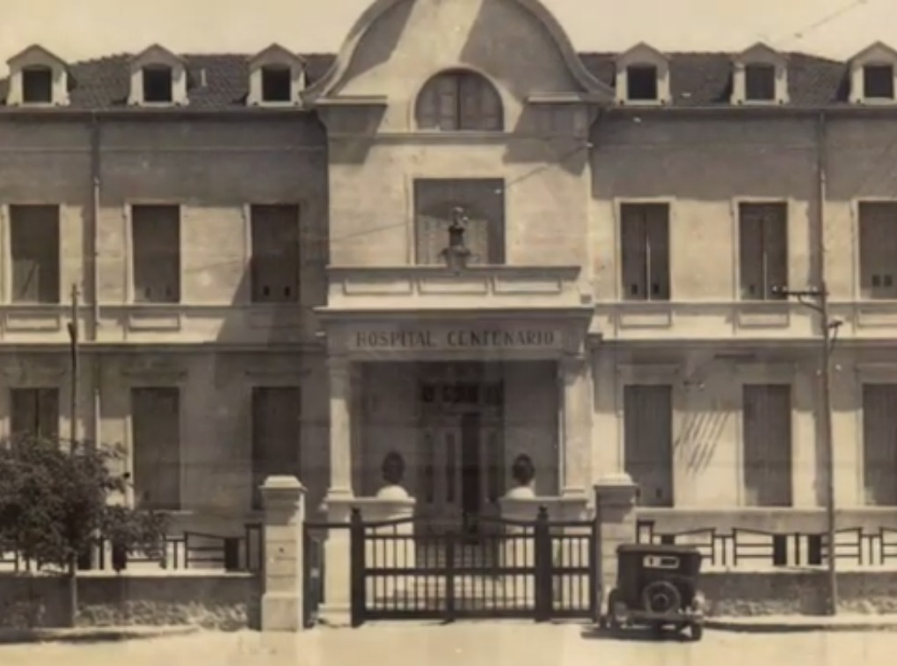

Dra. Andrea Martins
Directora
Conocé la historia, los valores y las autoridades que forman parte del Hospital Centenario de Gualeguaychú.
La historia del Hospital Centenario está profundamente ligada a la historia de Gualeguaychú y al compromiso de su comunidad con el cuidado de la salud.
Sus orígenes se remontan a 1857, con la creación del Hospital de la Caridad. A lo largo de las décadas, la institución fue creciendo junto con la ciudad y, en 1875, la Sociedad de Beneficencia asumió su administración, impulsando el desarrollo de una atención sanitaria cada vez más organizada.
Con el crecimiento de Gualeguaychú surgió la necesidad de contar con un establecimiento de mayor capacidad. En 1909 se destinó el terreno para la construcción del nuevo hospital y, el 24 de mayo de 1910, se colocó su piedra fundamental, en el marco de las celebraciones por el centenario de la Revolución de Mayo.
Tres años más tarde, el 30 de agosto de 1913, abrió sus puertas el nuevo Hospital Centenario.

Desde aquel día, generaciones de profesionales, trabajadores y miembros de la comunidad han formado parte de su historia. Con el paso del tiempo, el hospital fue incorporando nuevos servicios, especialidades y tecnologías, acompañando las necesidades de Gualeguaychú y de toda la región.
Más de un siglo después de su inauguración, el Hospital Centenario continúa siendo un referente de la salud pública del sur de Entre Ríos.
Su historia no está formada únicamente por edificios, fechas y acontecimientos. Está construida por personas: quienes cuidaron, quienes trabajaron, quienes confiaron y quienes, generación tras generación, hicieron del hospital una institución fundamental para la comunidad.
Una institución pública se construye todos los días a través del compromiso de sus equipos y de una atención centrada en las personas.
Promovemos una atención respetuosa, cercana y centrada en las necesidades de cada persona.
Trabajamos en equipo con responsabilidad y vocación de servicio hacia la comunidad.
Buscamos favorecer el acceso a la salud pública de manera justa y responsable.
Impulsamos prácticas que contribuyan a una atención segura y de calidad.
Aprendemos, incorporamos herramientas y evolucionamos junto a las necesidades sanitarias.
Fortalecemos el vínculo entre el hospital, las familias y la comunidad de Gualeguaychú.
La información publicada en junio de 2026 indica atención para turnos de lunes a viernes de 6 a 19 hs. en admisiones del nuevo edificio y pabellones 3 y 4.